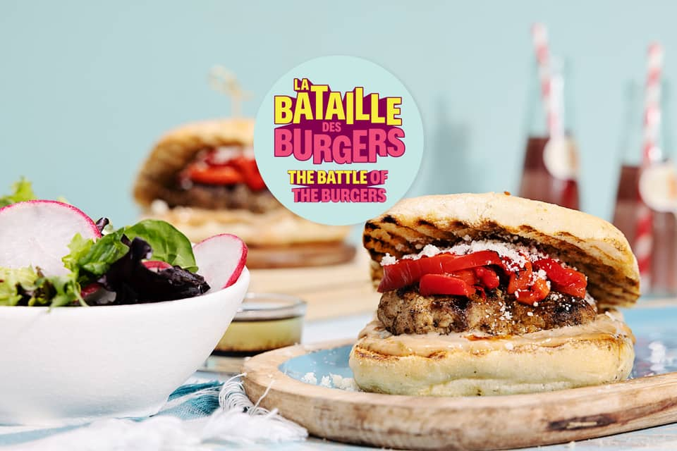

BBQ Pork 'n' Parm Burgers

Description
These juicy barbecued pork burgers are above par—or should we say above parm—thanks to a touch of grated cheese worked into the well-seasoned patties. You’ll set off that irresistibly salty, savoury edge with two bold toppings: roasted peppers for zing and caper mayo for bling. The rest is as simple as serving them on lightly grilled garlic focaccia buns with a side salad of crisp radishes and soft baby greens.
Ingredients
- 250g ground pork
- 100g radishes
- 120g baby greens
- 60ml mayo
- 30ml balsamic vinegar
- 10g capers
- 2 roasted peppers
- 25g parmigiano reggiano
- 2 garlic focaccia buns
- 12g meat & greet spices
- oil
- salt
- pepper
Steps
- Mise en place
- Oil & heat grill on high
- Thinly slice radishes & roasted peppers
- Roughly chop capers
- Prepare the patties
- Combine pork, 1/2 the cheese, 1/3 of the spices, salt, & pepper
- Form into 4 patties
- Grill the patties & buns
- Add patties to grill
- Grill 3-5 minutes per side
- Transfer to plate & keep warm
- Add the buns, cut-sides down, to the grill
- Grill 1-2 miniutes until lightly toasted
- Transfer to plate
- Make the caper mayo
- Combine capers, mayo, 1/2 the vinegar, & a pinch of the remaining spices
- Make the salad
- Combine remaining vinegar, 6 tbsp of oil, remaining spices, salt, & pepper
- Add baby greens and radishes
- Toss well
- Finish & serve
- Spread caper mayo on buns
- Top buns with patty, roasted peppers, & cheese
- Divide salad